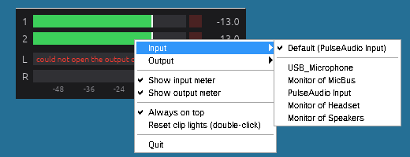

gomic Rust edition
A small always-on-top stereo peak meter with latching clip lights, for Windows and macOS. This branch is the Go program rewritten in Rust.

Install
You need Rust 1.95 or newer. Installing it with rustup also gives you cargo, the build tool used below.
The go install equivalent
Yes, there is one: cargo install. It downloads the source, builds an optimized binary, and puts it on your PATH.
cargo install --git https://github.com/mareklanduch/gomic --branch claude/rust-rewrite --locked| Go | Rust | |
|---|---|---|
| Command | go install github.com/mareklanduch/gomic@latest | cargo install --git https://github.com/mareklanduch/gomic --branch claude/rust-rewrite --locked |
| Where the program lands | ~/go/bin | ~/.cargo/bin (%USERPROFILE%\.cargo\bin on Windows) |
| Hide the console on Windows | Add -ldflags "-H=windowsgui" | Nothing to add; it is set in the source |
| Pin exact dependency versions | Always, through go.sum | Add --locked, which uses the committed Cargo.lock |
| Pick a version | @v0.2.0, @latest, @<commit> | --tag v0.2.0, --branch name, --rev <commit> |
| Update | Run the command again | Run the command again |
| Uninstall | Delete the file | cargo uninstall gomic |
| First build | Seconds | A few minutes, because about 135 dependency crates are compiled |
The even shorter cargo install gomic only works for programs published on crates.io. This one is not published there, so use the --git form above.
Windows
Run the cargo install command above, then start gomic from the Start menu's Run box, a shortcut, or a terminal. If the build complains about a missing linker, install the "Desktop development with C++" workload of the Visual Studio Build Tools; rustup offers to do this during setup.
macOS
Build the app bundle rather than a bare binary. macOS only grants audio access to a signed bundle that says why it wants it, and build_mac.sh takes care of both. It needs the Xcode command line tools (xcode-select --install).
git clone --branch claude/rust-rewrite https://github.com/mareklanduch/gomic
cd gomic
sh build_mac.sh
open gomic.appmacOS 14.2 or newer is required. Metering an output device needs macOS 14.6 or newer.
From a checkout
cargo run --release # build and start
cargo build --release # the binary is target/release/gomic
cargo install --path . # install this checkout into ~/.cargo/binLinux
Not a supported platform, but it builds (install libasound2-dev first) and meters inputs through ALSA. There is no output metering, and the menu is drawn inside the small window, where it gets clipped.
Using it
| Action | Result |
|---|---|
| Drag anywhere | Move the window |
| Double-click | Reset the clip lights |
| Right-click | Menu: Input and Output device submenus, Show input meter, Show output meter, Always on top, Reset clip lights, Quit |
- Each device submenu lists "Default", which follows the system default when it changes, and every connected device.
- Bars labeled
1and2are the input channels;LandRare the output channels. - At least one meter is always visible: hiding the only one shows the other. A hidden meter does not keep its device open.
- Bars are green below -12 dBFS, yellow up to -3 dBFS, and red above. A clip light stays lit until you reset it.
| Flag | Meaning |
|---|---|
--source input|output|both | Show these meters, overriding the saved choice |
--probe 5s | Print levels to the console for this long instead of opening the window |
--reset-position | Forget the saved window position and start in the top-right corner |
--help, --version | Show the options or the version |
Settings are stored in gomic/config.json under the per-user configuration directory: %AppData% on Windows, ~/Library/Application Support on macOS.
Rust vs Go
The window looks and behaves the same. The differences are in how it is built, what it depends on, and a few details at the edges.
For someone using the program
| Go | Rust | |
|---|---|---|
| Flags | One dash: -source, -probe | Two dashes: --source, --probe. Adds --reset-position, --help, --version |
| Output meter on macOS | Not available; the menu only offers the input picker | Offered, through system audio capture on macOS 14.6 or newer. Not tested on a Mac |
| Oldest macOS | 11 | 14.2 |
| Console window on Windows | Appears unless built with -H=windowsgui; then -probe prints nothing | Never appears. Started from a terminal, --probe and --help still print there |
| Program size (Windows, 64-bit) | 2.9 MB | 5.3 MB |
| Drawing | Windows GDI and Cocoa, on the CPU | OpenGL, so it needs a working graphics driver |
| Text | The system font (Segoe UI, San Francisco) | The font bundled with the GUI library, identical on every system |
| Saved window position | Ignored if it is no longer on any screen | Used as saved. If the window ends up off-screen, start once with --reset-position |
| Settings file | Same file and field names, so position, always-on-top, and which meters are shown carry over. Device choices do not: the two versions name devices differently, so a device picked in one shows as "not connected" in the other until you pick it again. On a display scaled above 100% the saved position can also be off, because Go stores pixels and Rust stores scaled points. | |
| Linux | Does not build | Builds and meters inputs, unsupported |
For someone reading or changing the code
| Go | Rust | |
|---|---|---|
| Window code | Written twice: Win32 calls in Go, and Cocoa in Objective-C through cgo, kept in step by hand | Written once with eframe/egui, the same on every system |
| Menu | Built twice, with Win32 and with NSMenu | Described once as data (src/menu.rs) and shown natively through muda |
| Audio | Hand-written WASAPI over raw COM calls on Windows; malgo on macOS | cpal on every system |
| Application code | About 1,840 lines of Go and Objective-C | About 1,180 lines of Rust |
| Unit tests | 29 | 33 |
| Dependencies | 1 module, used on macOS only. Windows uses the standard library alone | About 10 direct crates, about 135 in total once their own dependencies are counted |
| Low-level code | COM method calls by table index, manual memory layout of Windows structures | Three small unsafe calls: showing the native menu (two) and attaching to the console |
| Building for Windows from Linux | Works out of the box | Needs the MinGW toolchain, or build on Windows |
| macOS build needs | Go and the Xcode tools (cgo) | Rust and the Xcode tools |
| Checks in CI | gofmt, go vet, go test | cargo fmt, cargo clippy with warnings as errors, cargo test |
| Minimum toolchain | Go 1.27 | Rust 1.95 |
Which one to prefer
The Go version is the leaner program: smaller, almost no dependencies, and it draws without a graphics driver. The Rust version is the leaner codebase: one implementation instead of two, less low-level code, and output metering on macOS in principle. If the program only ever needs to run on Windows, the Go version has less that can go wrong. If the macOS side matters or the code will keep growing, the Rust version is easier to maintain.
What was tested
This rewrite has not been run on a real Windows or macOS machine. Treat it as a candidate to try, not as a drop-in replacement, until it has.
- Checked on Linux: formatting, lints with warnings as errors, and all 33 unit tests. Lints also pass for the Windows target.
- Checked under Wine (the Windows build, with virtual sound devices and test audio): input metering, the native menu and both device submenus, switching devices, showing both meters, the window resizing, dragging, saving and restoring settings, first-run placement, and
--probeprinting to the terminal. - Not testable under Wine: output metering. Wine does not implement capturing what is playing, so the output meter shows an error there. The Go version fails the same way under Wine.
- Not run at all: the macOS build, including the microphone permission prompt, output metering, and which way the window grows when the second meter is shown.
- Seen under Wine, unconfirmed elsewhere: a one-pixel light line along the top edge of the window.
Development
cargo fmt --check
cargo clippy --all-targets -- -D warnings
cargo test
cargo run --release| Path | Contents |
|---|---|
src/main.rs | Command line, startup, --probe |
src/app.rs | The window: drawing, dragging, saved position |
src/menu.rs | The right-click menu as data, and showing it |
src/capture.rs | One capture thread per source, device lists, following the default device |
src/meter.rs | Peak scanning and the bar's rise/fall logic |
src/config.rs | Saved settings, including files written by the Go version |
build_mac.sh | Builds and signs gomic.app |
.github/workflows | CI on Windows, macOS, and Linux; releases from main |